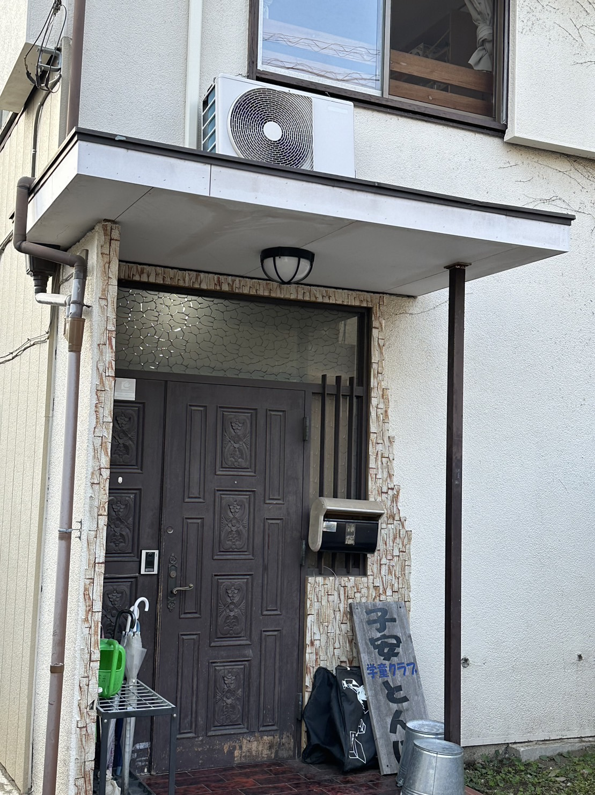

[学童に聞き込み調査]
(調査場所：学童クラブ第一子安とんぼ)

学童保育運営の課題
1.事務作業の負担:
•学童保育では、保育園のように業務が分割されず、保育士の業務、給食の準備、事務作業など全てを担う必要がある。
•運営を保護者に手伝って貰っているボランティアで。
•高度な業務は社労士など専門家に依頼することも。
2.スペースとリソースの限界:
•園庭があっても、子どもの数に比べて公園や遊び場が不足している。
現状の解決策
・運営ICTサービス利用
月額5000円:
•子どもの出席管理や保護者への連絡などの業務を効率化。
プログラミング教育に対する見解
•学童保育でのプログラミング教育の必要性については特に感じていない。
•学校がプログラミングなどの教育を提供しているとの認識。
•新しいプログラムを導入する必要性は現状では感じられていない。